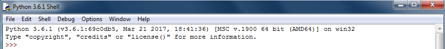
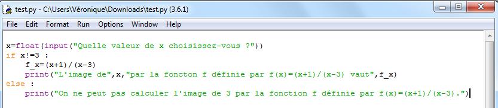
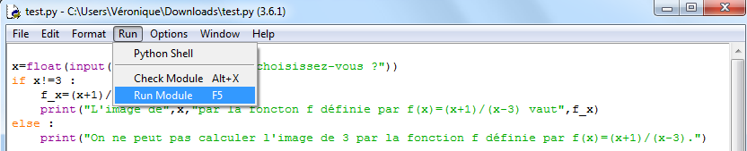
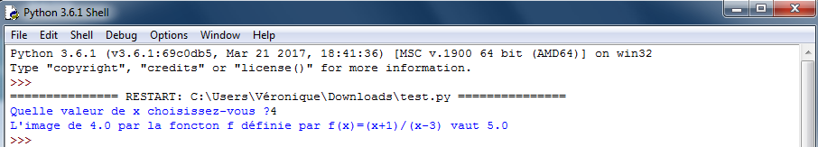
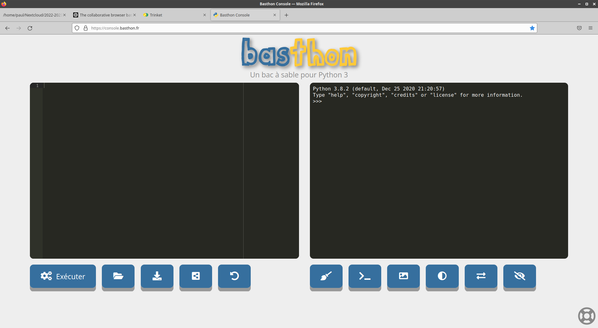
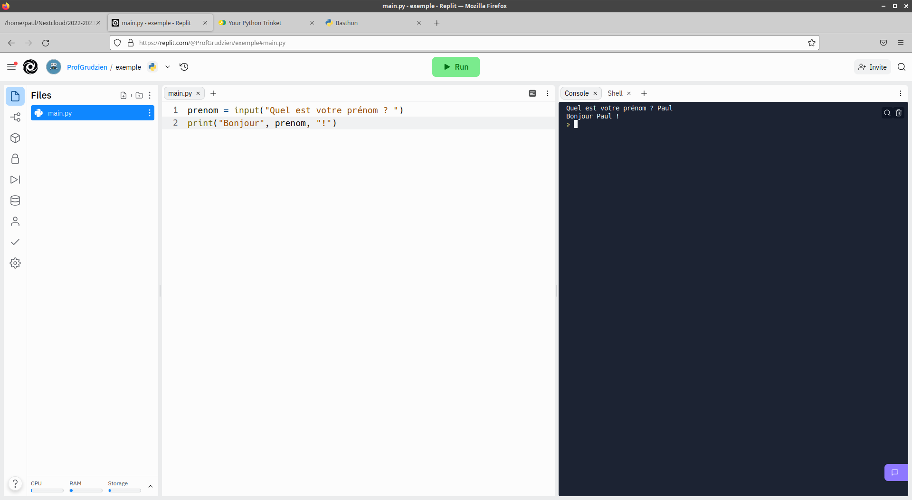
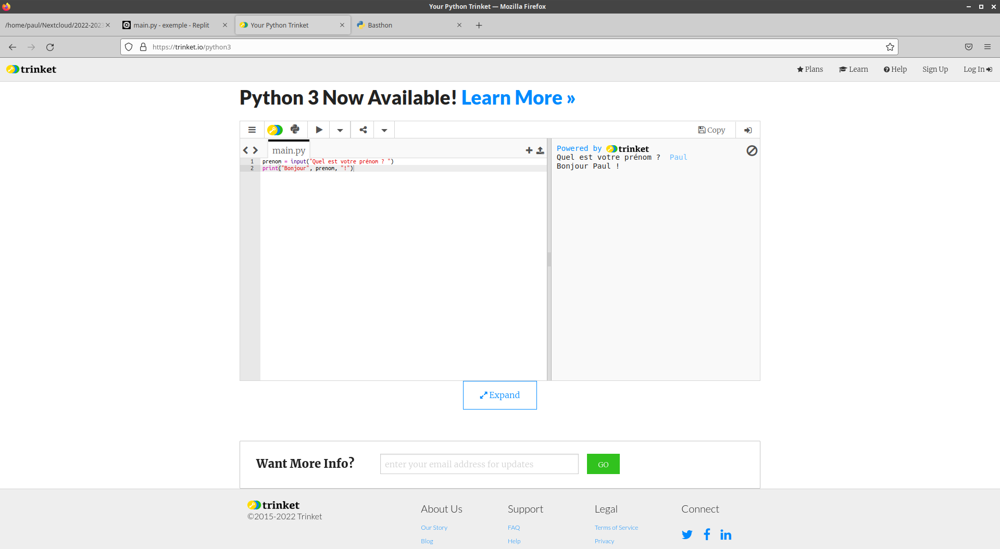

Ouvrir une interface Python
Au lycée
Au lycée, Python est installé sur tous les postes. Pour l'utiliser, il faut ouvrir une IDE (environnement de développement intégré). Vous trouverez le raccourci de cette IDE sur le bureau dans l'un des dossiers suivants (selon les salles) :
- Maths (Python 3.7)
- SI - SNT (WinPython)
Au lancement d’IDLE, apparaît une seule fenêtre. C’est dans celle-ci que s’afficheront les sorties du programme. Cette fenêtre est facilement identifiable grâce aux trois chevrons présents (>>>). 
Le programme doit être écrit dans une autre fenêtre. Pour l’obtenir il faut cliquer sur File puis New File. Exemple : 
Pour exécuter le programme, il faut cliquer sur Run puis Run Module.  Un message demandant d'enregistrer le code source peut apparaître. Rappel : au lycée il ne faut pas enregistrer son travail sur le bureau au risque de le perdre à la prochaine déconnexion.
S'il n'y a pas d'erreur de syntaxe, le résultat est visible dans la première fenêtre : 
A la maison
Vous n'êtes pas obligés d'installer Python sur votre ordinateur pour pouvoir l'utiliser. Vous pouvez utiliser l'un des services web suivant :
Basthon
Basthon est l'acronyme de "Bac À Sable pour pyTHON". Basthon est utilisé pour s'initier au language de programmation Python 3 sans rien avoir à installer. Il faut seulement disposer d'un navigateur (Firefox, Chrome/Chromium ou Edge) à jour et d'une connexion à Internet.
Basthon est le service en ligne recommandé pour son respect de la vie privée. Aucune donnée personnelle n'est enregistrée, il n'y a aucune publicité, et ce service ne nécessite aucune inscription.
Ce service est disponible à l'adresse https://basthon.fr/ et vous pouvez utiliser le mode console plus proche de la disposition utilisée en classe.
Replit
Replit est un IDE en ligne gratuit qui supporte plus de 50 langages. Il est gratuit mais nécessite une inscription. Cette inscription permet d'enregistrer sont code et de le retrouver facilement mais aussi d'inviter d'autres personnes pour travailler de manière coopérative et simultanée sur un programme.
Ce service est disponible à l'adresse https://replit.com/.
Trinket
Trinket vous permet d'écrire et de lancer du code via n'importe quel navigateur et sur n'importe quel équipement. Trinket fonctionne directement, sans avoir besoin de se connecter, de télécharger plugins ou même d'installer un programme. Vous pouvez facilement partager ou intégrer votre code lorsque vous avez fini.
Ce service est disponible à l'adresse https://trinket.io/python3.